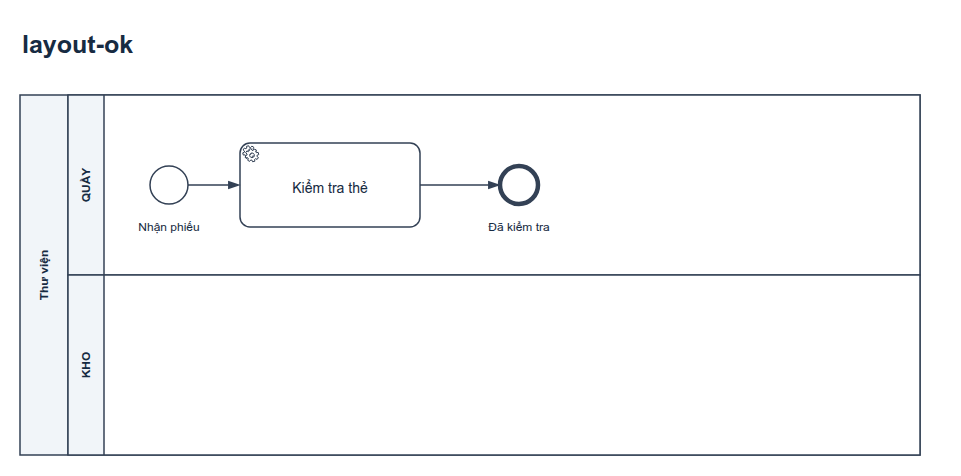
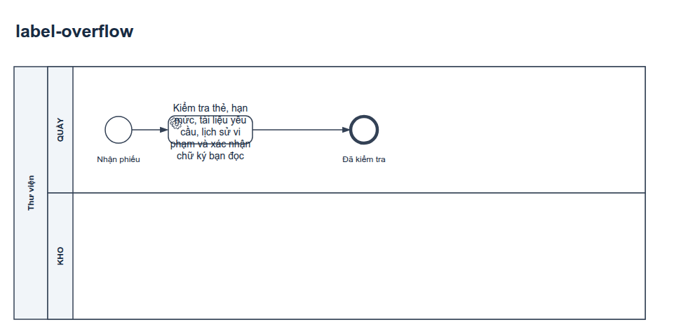
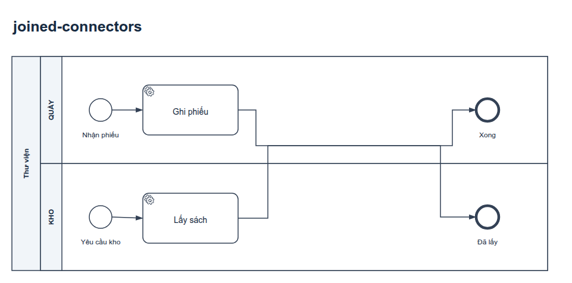
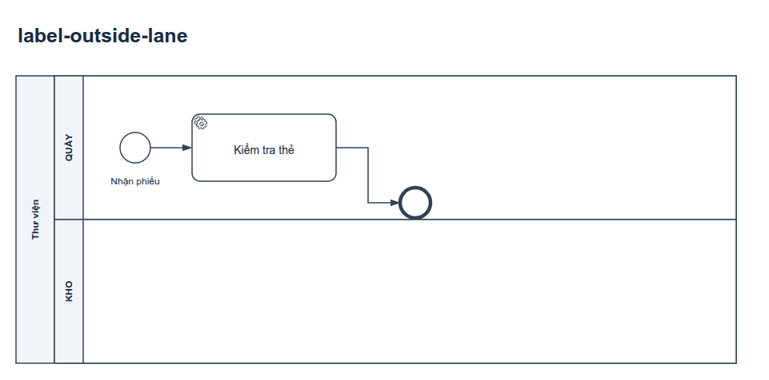
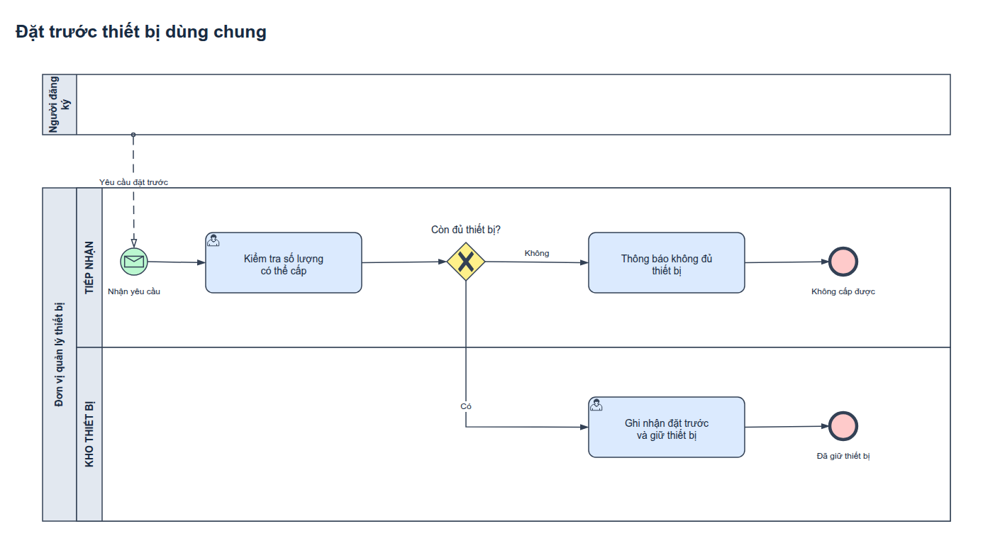
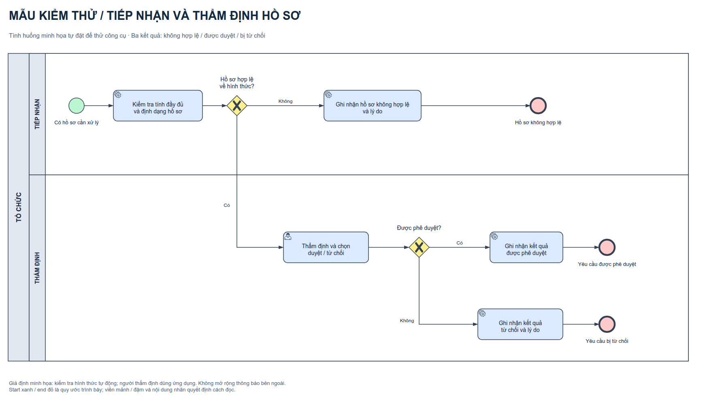
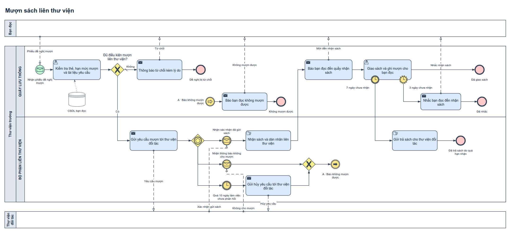

1. Triết lý mô hình hóa & Phạm vi hoạt động
bpmn-drawio là skill chuyên dụng giúp AI agent (như Claude Code, Google Antigravity, Roo-Cline, Cursor...) phân tích yêu cầu nghiệp vụ, dựng sơ đồ BPMN chuẩn xác trên draw.io và tự động chạy bộ rà soát 4 lớp.
1. Nghiệp vụ đúng
Tách bạch dữ kiện đề bài với giả định suy diễn. Ghi rõ điều kiện rẽ nhánh, người chịu trách nhiệm và kết quả sau cùng.
2. Ký pháp chuẩn OMG
Tuân thủ nghiêm ngặt chuẩn OMG BPMN 2.0.2 (tables 10.84–10.93): đúng loại event, hướng luồng thông điệp, boundary timers.
3. Bố cục hình học thật
Dùng renderer chính thống của draw.io để đo tọa độ thực tế: không tràn chữ, không đè marker, không chồng đường connector.
4. Màu sắc tương phản
Màu là lớp trình bày tăng tính trực quan. Màu không làm thay đổi ngữ nghĩa ký pháp và bảo đảm chuẩn tương phản WCAG.
Những gì Skill thực hiện xuất sắc
- Lập bảng phân tích yêu cầu, tách dữ kiện thực tế và giả định logic.
- Dựng sơ đồ bằng các hình BPMN gốc của thư viện draw.io.
- Xuất đồng thời 2 bản: bản thường (monochrome) và bản màu (bizagi-inspired) với cùng mô hình hình học 100%.
- Dựng ảnh PNG/SVG/PDF bằng Chrome headless và mã nguồn viewer draw.io chính gốc.
- Chạy bộ kiểm tra cấu trúc XML, quy tắc BPMN, tương phản màu và va chạm bố cục (Auditor).
Phạm vi giới hạn & Không hỗ trợ
- Không tự phong chứng nhận OMG: Đạt kiểm tra tự động chỉ có nghĩa là không vi phạm các luật mà script biết tìm.
- Không phải engine thực thi: Không chạy mô phỏng token runtime như Camunda/Activiti XML.
- Chưa hỗ trợ biểu đồ nâng cao: Choreography, Conversation và tự động dàn trang 100% (auto-layout) chưa được hỗ trợ.
- Không thay thế con người: Phê duyệt nghiệp vụ cuối cùng luôn cần chuyên viên phân tích (BA) xem xét.
2. Cài đặt & Hướng dẫn tương tác với AI Agent
Skill tương thích với mọi trợ lý lập trình đọc định dạng SKILL.md.
Dưới đây là 3 bước cài đặt đơn giản:
| Bước | Hành động & Lệnh thực thi |
|---|---|
| 1. Tải Release candidate |
Tải bpmn-drawio-1.0.0-rc.2-candidate.zip từ mục Releases và kiểm tra mã SHA-256 đối chiếu:
|
| 2. Cài đặt vào Agent |
Giải nén thư mục bpmn-drawio/ vào nơi lưu trữ skill của agent:• Với Claude Code toàn cục: ~/.claude/skills/bpmn-drawio/• Với dự án đơn lẻ: .claude/skills/bpmn-drawio/ hoặc thư mục skill của IDE.
|
| 3. Chuẩn bị draw.io viewer |
Clone mã nguồn draw.io ở commit đã được kiểm chứng để phục vụ việc xuất ảnh trung thực:
|
Câu lệnh mẫu (Prompts) cho AI Agent
Sao chép các mẫu câu lệnh dưới đây để ra lệnh cho trợ lý AI đạt hiệu quả tối ưu:
3. Bộ công cụ dòng lệnh (CLI Tools & Automation)
Mọi script đều nằm trong thư mục skills/bpmn-drawio/scripts/, viết bằng Python thuần và không cần thư viện ngoài (zero external pip dependencies).
| Script | Chức năng chính | Ví dụ dòng lệnh |
|---|---|---|
doctor.py |
Kiểm tra môi trường hệ thống: Python 3.10+, Chrome headless, viewer draw.io, font tiếng Việt | python3 doctor.py --drawio-root /path/to/drawio --output-dir /tmp/test |
create_demo.py |
Tạo bộ sơ đồ demo mẫu hoàn chỉnh (bản thường, bản màu, tài liệu Markdown) | python3 create_demo.py --output-dir output/demo |
colorize_drawio.py |
Chuyển đổi phối màu giữa monochrome và bizagi-inspired giữ nguyên 100% hình học |
python3 colorize_drawio.py nguon.drawio mau.drawio --theme bizagi-inspired |
render_drawio.py |
Dựng ảnh vector SVG và raster PNG (kèm PDF) bằng renderer chính thống của draw.io | python3 render_drawio.py diagram.drawio --drawio-root /path/to/drawio --output-dir render/ |
audit_drawio.py |
Kiểm tra toàn diện cấu trúc XML, chuẩn OMG BPMN 2.0.2, tương phản màu và va chạm bố cục | python3 audit_drawio.py diagram.drawio --compare mau.drawio --render-dir render/ --report audit.json |
smoke_package.py |
Kiểm thử độc lập gói ZIP phát hành (giải nén, chạy doctor, tạo demo, audit) | python3 smoke_package.py bpmn-drawio-candidate.zip --report smoke.json |
Khi chạy audit_drawio.py, bạn sẽ nhận được một file JSON chứa kết quả phân tích:
structural_checks (tính nguyên vẹn của file XML),
bpmn_rules (đúng quy tắc sự kiện và kết nối),
layout_checks (chẩn đoán tràn chữ và cắt nhau),
only_color_differs: true (xác nhận hai bản vẽ chỉ khác nhau về giá trị màu, hoàn toàn đồng nhất về cấu trúc).
4. Tra cứu ma trận ký pháp OMG BPMN 2.0.2
Bảng tra cứu chuẩn hóa theo đặc tả OMG BPMN 2.0.2 (Tables 10.84 – 10.93 và Sections 10.5 – 10.6).
| Vị trí cấu trúc | Các loại Marker hợp lệ theo chuẩn OMG | Đặc điểm hình ảnh nhận diện |
|---|---|---|
| Top-level Start Event | None (không marker), Message, Timer, Conditional, Signal, Multiple, Parallel Multiple | Một vòng tròn viền đơn mảnh (1px). Không được có Sequence Flow đi vào. |
| Subprocess Start (Embedded) | Chỉ duy nhất None Start (không marker) | Một vòng tròn viền đơn mảnh, không chứa biểu tượng bên trong. |
| Event Sub-process Start (Ngắt) | Message, Timer, Error, Escalation, Compensation, Conditional, Signal, Multiple, Parallel Multiple | Vòng tròn viền đơn nét liền. Luôn kích hoạt khi luồng cha đang chạy. |
| Event Sub-process Start (Không ngắt) | Message, Timer, Escalation, Conditional, Signal, Multiple, Parallel Multiple (Không có Error/Cancel) | Vòng tròn viền đơn nét đứt (dashed). Không làm dừng tiến trình cha. |
| Boundary Event (Ngắt luồng) | Message, Timer, Escalation, Error, Cancel, Compensation, Conditional, Signal, Multiple, Parallel Multiple | Hai vòng tròn đồng tâm nét liền (solid double ring) gắn trên viền Activity. Error và Cancel luôn luôn ngắt. |
| Boundary Event (Không ngắt) | Message, Timer, Escalation, Conditional, Signal, Multiple, Parallel Multiple | Hai vòng tròn đồng tâm nét đứt (dashed double ring) gắn trên viền Activity. Tạo luồng chạy song song phụ. |
| Intermediate Catching (Bắt sự kiện) | Message, Timer, Conditional, Link, Signal, Multiple, Parallel Multiple | Hai vòng tròn đồng tâm. Marker biểu tượng rỗng (unfilled). |
| Intermediate Throwing (Ném sự kiện) | None, Message, Escalation, Link, Compensation, Signal, Multiple | Hai vòng tròn đồng tâm. Marker biểu tượng tô đậm đặc (filled/dark). |
| End Event (Kết thúc) | None, Message, Escalation, Error, Cancel, Compensation, Signal, Terminate, Multiple | Một vòng tròn viền dày (thick ring). Không có Sequence Flow đi ra. Không có Timer End hay Link End. |
- Cancel End: Chỉ được dùng trong Transaction Sub-Process có cơ chế rollback bù trừ. Việc khách hàng "Hủy đơn" thông thường phải dùng End thông thường hoặc Message End, không được tự ý cắm Cancel End.
- Terminate End: Chỉ kết thúc toàn bộ các token bên trong phạm vi tiến trình sở tại (scope), không phải nút bấm xóa sổ mọi Pool của đối tác.
- Message Flow qua Pool: Sequence Flow (mũi tên nét liền) tuyệt đối không được cắt ngang biên giới giữa 2 Pool độc lập; chỉ Message Flow (mũi tên nét đứt, đầu tròn rỗng → mũi tên hở) mới được nối giữa 2 Pool.
5. Chẩn đoán bố cục hình học thực tế (Layout Diagnostics)
Khác với các công cụ kiểm tra văn bản thông thường, bộ Auditor của bpmn-drawio sử dụng thông số hình học thực tế (tọa độ bounding box của nhãn chữ và tuyến đường polyline) do draw.io renderer tính toán.




• Bấm vào bất kỳ ảnh nào ở trên để phóng to xem chi tiết ở độ phân giải gốc.
6. Hệ màu & Tiêu chuẩn tương phản (WCAG Accessibility)
Trong BPMN 2.0.2 (§7.5 và §12.1.1), màu sắc là thuộc tính mở rộng không bắt buộc (non-normative). Mỗi bài làm theo chuẩn của skill luôn cung cấp hai phiên bản có cùng mô hình hình học:
Bản thường (monochrome)
Nền trắng tinh, đường nét xám đen (#334155), chữ đen rõ nét. Đây là bản tiêu chuẩn bắt buộc cho in ấn giáo trình, tài liệu thẩm định và bài nộp học thuật.
Bản màu (bizagi-inspired)
Phối màu chuẩn thị giác:
• Start Event: Xanh lá (#85C226)
• Mọi End Event: Đỏ (#E74C3C - kết thúc token, không có nghĩa thất bại)
• Gateway & Boundary Timer: Vàng cam
• Activity / Tasks: Xanh lam dịu

7. Thư viện ví dụ thực tế (Diagram Showcase)
Kho 9 bộ ví dụ độc lập đi kèm trong repository giúp người dùng tra cứu các mô hình nghiệp vụ từ cơ bản đến phức tạp.



10 Mẫu nâng cao có sẵn trong thư mục examples/bpmn/advanced-patterns/
| # | Tên mẫu quy trình | Mục tiêu kiểm chứng kỹ thuật |
|---|---|---|
| 01 | Duyệt đề nghị mua sắm thiết bị | XOR Data-based gateway phân luồng giữa các lane và vòng lặp chỉnh sửa |
| 02 | Tiếp nhận nhân sự mới | AND Parallel gateway chia nhánh song song (IT, Nhân sự, Thẻ) và đồng bộ kết quả |
| 03 | Phát hành tài liệu theo kênh chọn | Inclusive Gateway (OR) kích hoạt 1 hoặc nhiều nhánh đồng thời tùy điều kiện |
| 04 | Xin báo giá nhà cung cấp | Event-based Gateway cạnh tranh giữa sự kiện nhận thư phản hồi hoặc hết hạn 24h |
| 05 | Xử lý yêu cầu hỗ trợ khách hàng | Non-interrupting Boundary Timer gửi thông báo nhắc việc mà không ngắt luồng chính |
| 06 | Phát hành chứng từ tài chính | Error Boundary Event bắt lỗi nghiệp vụ tại biên và chuyển nhánh hoàn tác |
| 07 | Đặt lịch tư vấn trực tuyến | Event Sub-process nằm trong luồng cha lắng nghe tín hiệu hủy lịch đột xuất |
| 08 | Ghi danh hội thảo & Khóa học | Transaction Sub-Process kèm cơ chế Cancel và Compensation bù trừ giao dịch |
| 09 | Kiểm tra bộ tệp hồ sơ dự thầu | Multi-Instance Activity xử lý lặp song song hoặc tuần tự theo danh sách phần tử |
| 10 | Rà soát đăng ký thành viên | Terminate End chỉ dừng phạm vi subprocess con mà không ảnh hưởng luồng cha |
8. Bảng tra cứu sự cố thường gặp (Troubleshooting & FAQ)
Các giải pháp nhanh khi gặp lỗi trong quá trình tự chạy công cụ hoặc dựng ảnh:
| Thông báo lỗi / Triệu chứng | Nguyên nhân và cách xử lý nhanh |
|---|---|
Chrome/Chromium not found; supply --chrome PATH |
Máy chưa cài Chrome hoặc đường dẫn không nằm trong $PATH. Cài đặt google-chrome-stable hoặc truyền cờ --chrome /duong/dan/chrome. |
Missing official viewer: ...viewer-static.min.js |
Đường dẫn --drawio-root chưa trỏ chính xác tới thư mục mã nguồn clone của jgraph/drawio. |
Viewer digest differs from provenance manifest |
Phiên bản draw.io khác với commit đã ghim. Kiểm tra commit bằng lệnh: git -C drawio checkout 17b367b91dbab91804f852645788d7ffb46dcb79. |
Rendered evidence is stale for this input digest |
File .drawio đã bị sửa sau thời điểm dựng ảnh. Hãy chạy lại lệnh render vào thư mục sạch. |
| Chữ tiếng Việt bị hiển thị ô vuông hoặc lỗi dấu | Thiếu font chữ tiêu chuẩn trên hệ điều hành Linux. Cài đặt font Arial hoặc Liberation Sans: sudo apt-get install -y fonts-liberation. |